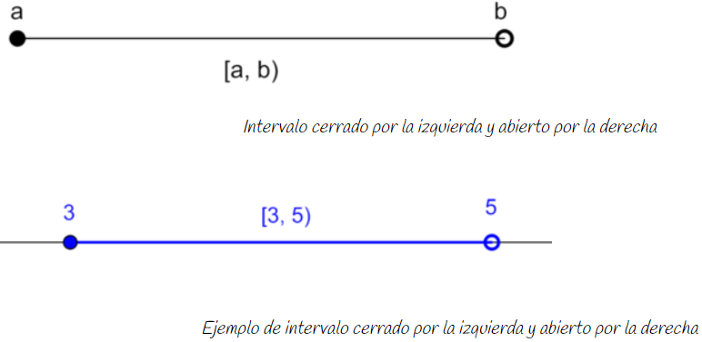

Intervalos
La ordenación de los números permite definir algunos conjuntos de números que tienen una interpretación geométrica en la recta real.
Vamos a definir ahora algunos subconjuntos de la recta real que llamaremos intervalos. De forma genérica, un intervalo es un segmento de la recta real que contiene todos los números comprendidos entre dos números llamados extremos.
En las figuras que aparecen a continuación se indica con un:
- círculo negro si el extremo está incluido en el intervalo y se utilizarán corchetes para representar los extremos cerrados.
- círculo blanco si el extremo está excluido del intervalo y se utilizarán paréntesis para representar los extremos abiertos.
TIPOS DE INTERVALOS
Intervalo abierto
|
Se llama intervalo abierto de extremos a y b, a < b y se representa por (a, b) al conjunto de todos los números reales x tales que a < x < b. Es decir, contiene todos los números entre a y b, sin incluir los extremos a y b. (a, b) = {x / x ∈ ℝ, a < x < b} |
Intervalo cerrado
|
Se llama intervalo cerrado de extremos a y b, a ≤ b y se representa por [a, b] al conjunto de todos los números reales x tales que a ≤ x ≤ b. Es decir, contiene todos los números entre a y b, incluyendo los extremos a y b. [a, b] = {x / x ∈ ℝ, a ≤ x ≤ b} |
Intervalo semiabierto: cerrado por la izquierda y abierto por la derecha
|
Se llama intervalo cerrado por la izquierda y abierto por la derecha de extremos a y b, a < b y se representa por [a, b) al conjunto de todos los números reales x tales que a ≤ x < b. Es decir, contiene todos los números entre a y b, incluyendo el extremo a y excluyendo el extremo b. [a, b) = {x / x ∈ ℝ, a ≤ x < b} |

Intervalo semiabierto: abierto por la izquierda y cerrado por la derecha
|
Se llama intervalo abierto por la izquierda y cerrado por la derecha de extremos a y b, a < b y se representa por (a, b] al conjunto de todos los números reales x tales que a < x ≤ b. Es decir, contiene todos los números entre a y b, incluyendo el extremo b y excluyendo el extremo a. (a, b] = {x / x ∈ ℝ, a < x ≤ b} |
Intervalos infinitos o semirrectas
|
Una semirrecta es la parte de la recta real que contiene todos los números mayores o menores que un número dado. Es decir, una semirrecta es un intervalo en el que uno de los extremos se va a infinito (+∞ ó –∞). Los extremos en el infinito son siempre abiertos y se pone paréntesis. |